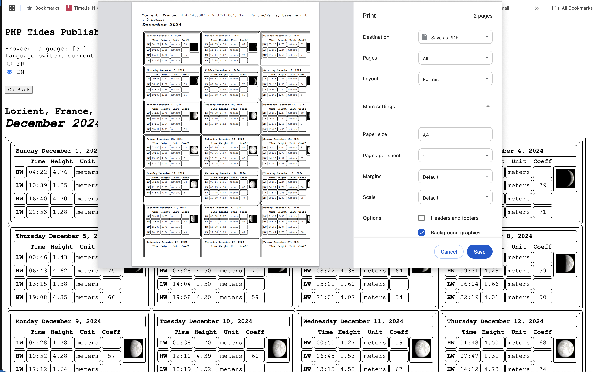
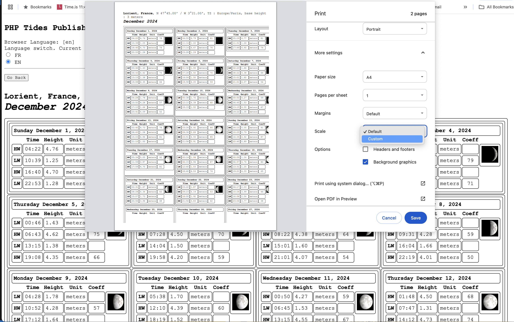

Comment imprimer ou générer un pdf à partir du navigateur.
Prenons un exemple, comme la publication d'almanachs de marée.
On a généré un almanach d'un mois, pour Lorient, voici ce que ça donne dans le navigateur quand c'est fini.
Maintenant, et c'est là que c'est intéressant, on veut que le résultat (en pdf ici), tienne sur une page imprimable.
Sur la page, faites un click droit avec la souris (ou bien cherchez la fonction "Imprimer" dans le menu principal), un menu doit apparaître (ici, on est sur Chrome, les autres navigateurs peuvent être un peu différents, mais
la fonctionnalité existe. Sinon... ben changez de navigateur !). Chrome, Safari, Firefox, Brave, Edge, FloorP, Pale Moon, SeaMonkey (et d'autres) sont capables de le faire.
Dans le menu, choisissez "Print" (c'est en anglais ici, vous trouverez l'équivalent dans votre langue).
Une nouvelle boite de dialogue apparait, dans laquelle on voit au moins deux choses :
À quoi votre document va ressembler une fois imprimé
Une liste des options disponibles pour le modifier
On a choisi "Save as PDF", dans la première ligne.
Ici, on constate clairement que le document ne tient pas sur une page.
On va utiliser l'échelle pour arranger ça.
On note également qu'ici, le document imprimé ne correspond pas tout à fait au document affiché.
Ceci est fait à dessein, grâce aux CSS (Cascading Style Sheets) associées au document.
Il peut y avoir dans le document affiché des éléments inutiles dans la version imprimée (comme des liens vers d'autres sites),
et vice-versa (comme des saut de page).

Pour l'échelle, à la place de "Default", on choisit "Custom".

Et là, on ajuste l'échelle jusqu'à ce que ça colle !
Dans notre cas, "60" semble convenir.
On peut mainenant cliquer sur "Save", le fichier pdf est prêt à être sauvegardé sur votre système !
Toutes les options de la liste sont également prêtes à servir !
Allez-y !


On a généré un almanach d'un mois, pour Lorient, voici ce que ça donne dans le navigateur quand c'est fini.